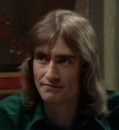
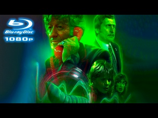
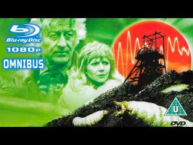
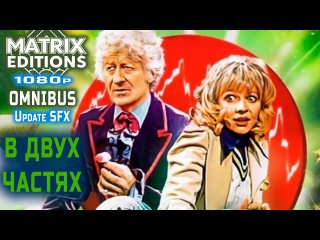
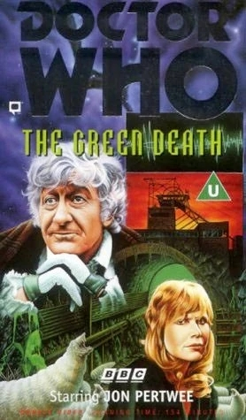
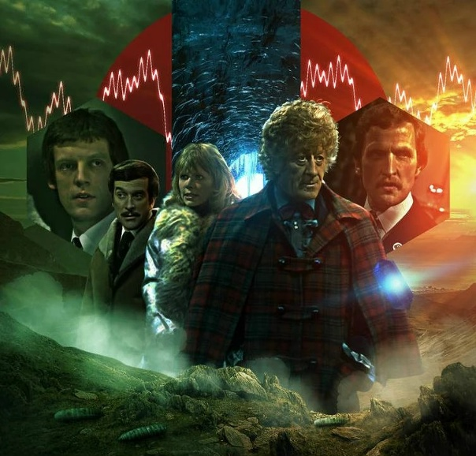
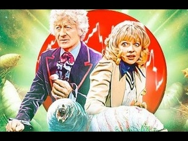

помощник

помощник

помощник

помощник
Субтитры: Русские и Английские |  |
|---|---|
Субтитры: только Английские |  |
с обновлением визуальных эффектов (cunningmunki) Субтитры: отсутствуют |  |
| Все эпизоды сохранились в цвете (видеокассета PAL 2") |
|---|
| помощник | помощник | помощник |  помощник |
В шахтёрской деревушке Лланклач в Уэльсе люди гибнут от загадочной зелёной болезни, а из заброшенной шахты расползаются гигантские личинки-мутанты. Источник — завод Global Chemicals, чей директор одержим компьютером БОССом, планирующим захват контроля над человечеством. ЮНИТ подключается к расследованию, а эколог Клиффорд Джонс привлекает внимание Джо. В финале Джо принимает предложение Клиффа и уходит от Доктора — одно из самых трогательных прощаний в истории сериала.
 VHS - август 1996 |  DVD - 10 мая 2004 |
|---|---|
 DVD - 5 августа 2013 |  Blu-ray (обновленный сезон) - 8 июля 2019 * Версия в нашей группе |


